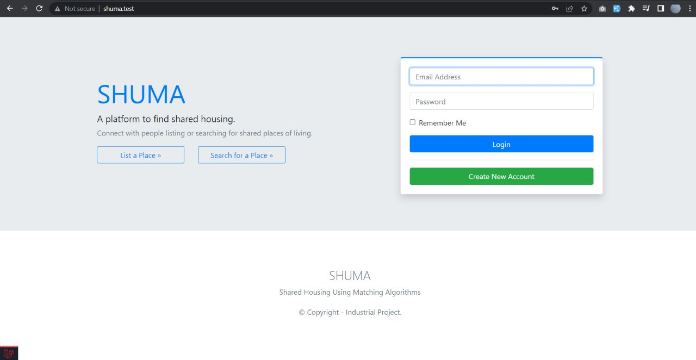
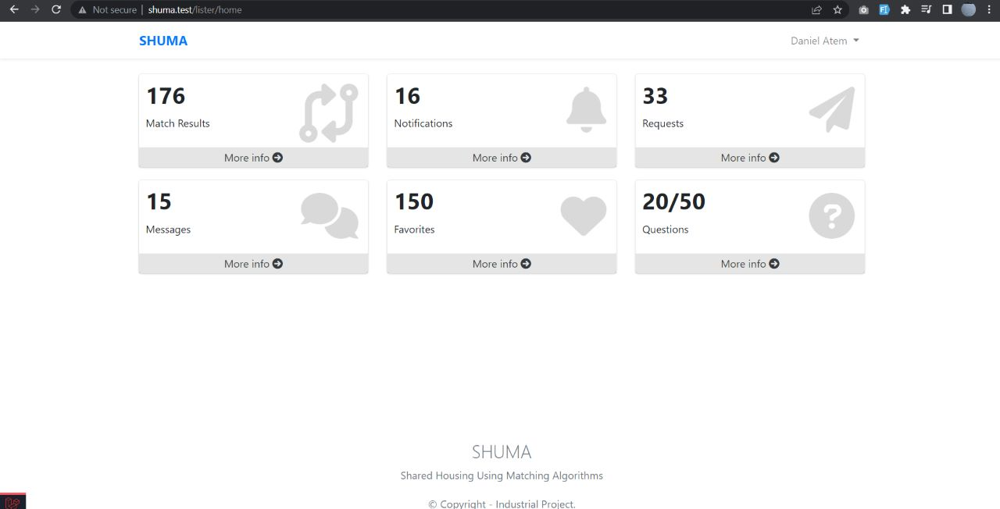
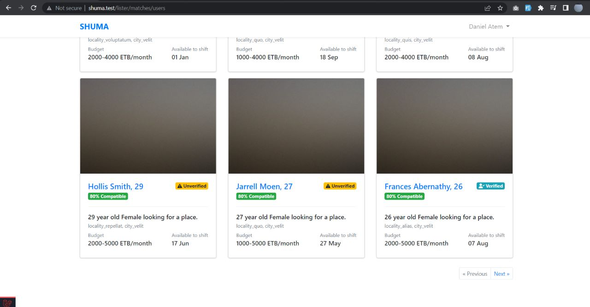
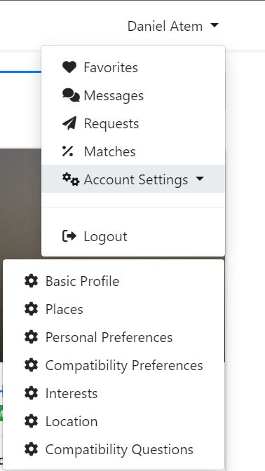
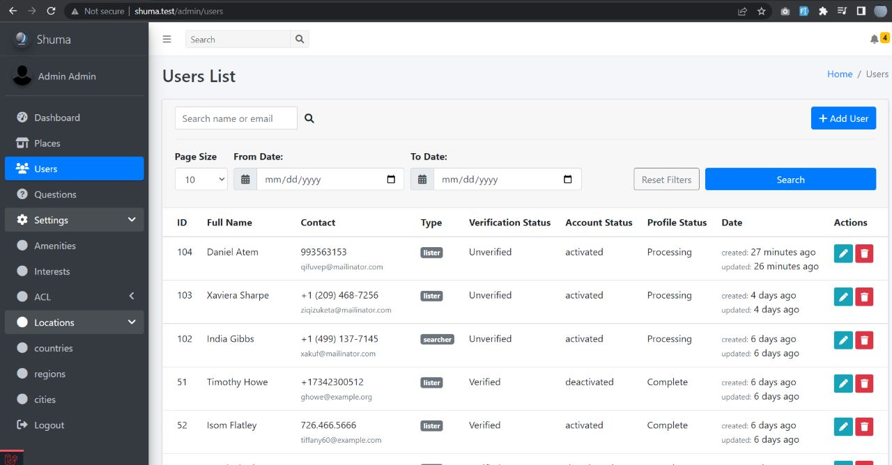

Shared Housing Using Matching Algorithms (SHUMA)
Technical Documentation
BSC Computer Science - Industrial Project 1
by: Daniel AtemTable of contents - Section 2
2. ALGORITHMS
- User Registration Algorithms
- User Profile Setup Algorithm
- Place Setup Algorithm
- Match Lister With Searcher Algorithm
- Match Searcher with Lister Algorithm
- Recalculate Compatibility Percentage Algorithm
- Update Matches Compatibility Percentage Algorithm
- Image Processing Algorithm
3. SECURITY METRICS
- System Level Security
- Database Level Security
4. CODING PROCEDURES AND STANDARDS
- 4.1. Code Naming Standards and Conventions
- 4.2. Coding Procedures
5. TESTING PROCEDURES
- 5.1. Test Case
- 5.2. Unit Test
- 5.3. Feature Test
- 5.4. System Testing
-
- 5.4.1. Test case for user registration
- 5.4.2. Test case for user profile setup
- 5.4.3. Test case for Lister place setup
- 5.4.4. Test case for User account settings
- 5.4.5. Test case for user requests
- 5.4.7. Test case for match Lister with Searcher
- 5.4.8. Test case for match Searcher with Lister
- 5.4.9. Test case for update compatibility question percentage
1. INTRODUCTION
This project titled - Shared Housing Using Matching Algorithms (SHUMA), is a web application system built to solve the problem of high rent prices and housing shortage in cities like Addis Ababa. It allows users to list or search for shared housing; the users and listed places are matched using our matching algorithms.
The online system has three user types: Admin, Lister, and Searcher. The Lister is the user renting or owning a property that they can list on the platform, the Searcher is the user looking for a place offering shared housing, the admin controls the system setting and features like verifying, activating and deactivation accounts.
Once the Lister or Searcher completes the sign up, a job is processed in the background to create the users account profile. Upon successful account creation, other jobs are queued, such place setup job, matching Lister with Searcher, matching Searcher with Lister, and Calculating and Update Compatibility Match percentages.
For the applications backend, we used the PHP Laravel framework to develop the application due to its expressive syntax and simplification of common tasks such as authentication, authorization, routing, sessions, object relational mapping, templating engine, caching, security features, testing and its growing ecosystem of developers [1].
The users of the system will be able to access a number of features based on the user type. Some main features include: signup, login, profile setup, place listing, account settings, favorites, messaging, sending requests and matching users.
2. ALGORITHMS.
The below algorithms are written in pseudo-code
*Note for all the below algorithms, a code refactor will be done later, using SOLID principles.*These refactor, using the appropriate SOLID principle will be done only when a test of a given algorithm passes.
User Registration Algorithm
// Purpose: this algorithm is used by all users when registering their basic information
Class names = CreateNewUser
Method name = Create
BEGIN
Variables: first_name, last_name, email, phone, password
If( form validation is successful)
Then create the user,
Then call the register response class to redirect the use to appropriate home route
Else
Send validation errors
END
User Profile Setup Algorithm
// Purpose: A multistep form used by both Lister and Searchers to set up their profile.
Class name = ProfileSetup
Method name = determineNextStep
BEGIN
Variable = current_step
If (current step is the start step)
Then redirect user to step one
If (current step is step 1)
Then store step one information in session
Then redirect the user to step 2
If (current step is step 2)
Then store step two information in session
Then redirect the user to step 3
If (current step is step 3)
Then store step three information in session
Then redirect the user to step 4
If (current step is step 4)
Then store step four information in session
Then redirect the user to step 5
If (current step is step 5)
Then store step five information in session
Then redirect the user to step 5
If (current step is step is final step)
Then store step final step information in session
If (check if profile setup information in the session is complete)
Then dispatch a profile setup job
Then change the user profile status to processing state
If (profile setup job is complete)
Then dispatch match Searcher with Lister job
Then redirect the user to their home page
Else
Redirect to step 1
END
Place Setup Algorithm
// Purpose: A multi-step form, used by Lister when registering a new place
Class name = PlaceSetup
Method name = determineNextStep
BEGIN
Variable = current_step
If (current step is the start step)
Then redirect user to step one
If (current step is step 1)
Then store step one information in session
Then redirect the user to step 2
If (current step is step 2)
Then store step two information in session
Then redirect the user to step 3
If (current step is step 3)
Then store step three information in session
Then redirect the user to step 4
If (current step is step is final step)
Then store step final step information in session
If (check if place setup information in the session is complete)
Then dispatch a place setup job and match Lister with Searcher Job
Then redirect the Lister to appropriate page
Else
Redirect to step 1
EndIf
END
Match Lister with Searcher Algorithm
// Purpose: when a Lister signup and creates a new place or update the place details, then all Searchers are matched based on the new place details and compatibility percentage with the Lister calculated.
Class name = MatchListerWithSearcherJob
Method name = handle
BEGIN
Variable = user_A, user_B, $latest_listers_place
$searchers = get from the database all Searchers whose place preference match the user_A place, location, and rent amount, also eager load searchers compatibility question
$user_A_compatibility_questions = load user_A compatibility questions
Foreach (Searcher chunk as user_B)
If ($user_A_compatibility_questions is not empty)
$user_B = Load the current user_B with its compatibility questions
$set_of_common_questions = Get the common set of questions between the searcher and the user_A
Endif
If ($set_of_common_questions is empty)
$total_match_percentage = Then set the match percentage to zero
If ($matched_record of the two users exist in the database)
Then update the records compatibility percentage to zero
Else
Create a new match record in the database for the two users
Endif
Else
Foreach ($set_of_common_questions as $common_question)
If($user_A_common_question->answer == $user_B_common_question->answer)
$relevance_A = user_A_common_question->relevance
$user_B_score += $get_relevance_weight($relevance_A)
EndIf
If($user_B_common_question->answer == $user_A_common_question->answer)
$relevance_B = $user_B_common_question->relevance
$user_A_score += $get_relevance_weight($relevance_B)
EndIf
EndForEach
EndIf
EndForEach
$user_A_total_percentage_score = user_B_weight_score / user_A_total_question_weight) * 100
$user_B_total_percentage_score = user_A_weight_score/user_B_total_question_weight) * 100
$total_match_percentage = sqrt($user_A_total_percentage_score * $user_B_total_percentage_score)
If( $match_record between user_A and user_B exists)
Update the record with the $total_percentage_score
Else
Create a new match record for the two users being matched
EndIf
END
User Registration Algorithm
// Purpose: this algorithm is used by all users when registering their basic information
Class names = CreateNewUser
Method name = Create
BEGIN
Variables: first_name, last_name, email, phone, password
If( form validation is successful)
Then create the user,
Then call the register response class to redirect the use to appropriate home route
Else
Send validation errors
EndIf
END
Match Searcher with Lister Algorithm
// Purpose: if a Searcher signups or updates his or her place preferences, then all the places that match the Searcher are retrieved with their owners and compatibility percentage calculated.
Class name = MatchSearcherWithListerJob
Method name = handle
BEGIN
Variable = user_A (as Searcher), user_B (as Lister)
$place_preferences = Retrieve the Searchers place preference from the database
$places = Retrieve the places from the DB that match the Searchers place preferences
$user_A = Load the Searchers compatibility questions
ForEach ($places as $place)
$user_B = $place->owner
$user_A_compatibility_questions = $user_A->compatibilityQuestions
$set_of_common_questions = user_B load set of common questions with user_A
If($set_of_common_questions is empty)
$total_match_percentage = 0
If($matched_record exists)
Update the match record of the two users
Else
Create New match record of the two users
EndIf
Else
ForEach($set_of_common_questions as $common_question)
If($user_A_common_question->answer == $user_B_common_question->answer)
$relevance_A = user_A_common_question->relevance
$user_B_score += $get_relevance_weight($relevance_A)
EndIf
If($user_B_common_question->answer == $user_A_common_question->answer)
$relevance_B = $user_B_common_question->relevance
$user_A_score += $get_relevance_weight($relevance_B)
EndIf
EndForEach
EndIf
$user_A_total_percentage_score = user_B_weight_score / user_A_total_question_weight) * 100
$user_B_total_percentage_score = user_A_weight_score/user_B_total_question_weight) * 100
$total_match_percentage = sqrt($user_A_total_percentage_score * $user_B_total_percentage_score)
If( $match_record between user_A and user_B exists)
Update the record with the $total_percentage_score
Else
Create a new match record for the two users being matched
EndIf
EndForEach
END
Recalculate Compatibility Percentage Algorithm
// Purpose: If a user updates his or her compatibility question answer, then, all the users matches compatibility percentage need to be updated.
Class name = RecalculateCompatibilityPercentageJob
Method name = handle
BEGIN
Variable = user_A
$user_A = load user_A compatibility questions
$user_A_matches = load user_A->matches
ForEach($user_A_matches as $user_B)
If($user_A->compatibility_questions is not empty)
$set_of_common_questions= load $user_B common questions with user_A
Else
ForEach($set_of_common_questions as $common_question)
If($user_A_common_question->answer == $user_B_common_question->answer)
$relevance_A = user_A_common_question->relevance
$user_B_score += $get_relevance_weight($relevance_A)
EndIf
If($user_B_common_question->answer == $user_A_common_question->answer)
$relevance_B = $user_B_common_question->relevance
$user_A_score += $get_relevance_weight($relevance_B)
EndIf
EndForEach
EndIf
$user_A_total_percentage_score = user_B_weight_score / user_A_total_question_weight) * 100
$user_B_total_percentage_score = user_A_weight_score/user_B_total_question_weight) * 100
$total_match_percentage = sqrt($user_A_total_percentage_score * $user_B_total_percentage_score)
If( $match_record between user_A and user_B exists)
Update the compatibility percentage column to the new percentage
EndIf
EndForEach
END
Update Matches Compatibility Percentage Algorithm
// Purpose: if a user updates a question answer, then all the other users that matched with this user, get their compatibility percentage updated
Class name = UpdateMatchesCompatibilityPercentageJob
Method name = handle
BEGIN
Variable = user_A
$user_A = load user_A compatibility Questions
$users_to_update = load all users that were matched to the current user_A
If ($users_to_update is not empty)
ForEach ($users_to_update as $user_B)
$user_A = load user_A with compatibility questions
If($user_A->compatibilityQuestions is not empty)
$set_of_common_questions = user_B load set of common questions with user_A
If($set_of_common_questions is not empty)
ForEach($set_of_common_questions as $common_question)
If($user_A_common_question->answer == $ user_B_common_question->answer)
$relevance_A = user_A_common_question->relevance
$user_B_score += $get_relevance_weight($relevance_A)
EndIf
If($user_B_common_question->answer == $user_A_common_question->answer)
$relevance_B = $user_B_common_question->relevance
$user_A_score += $get_relevance_weight($relevance_B)
EndIf
EndForEach
EndIf
$user_A_total_percentage_score = user_B_weight_score / user_A_total_question_weight) * 100
$user_B_total_percentage_score = user_A_weight_score/user_B_total_question_weight) * 100
$total_match_percentage = sqrt($user_A_total_percentage_score * $user_B_total_percentage_score)
If( $match_record between user_A and user_B exists)
Update the record with the $total_percentage_score
EndIf
EndIf
EndForeach
EndIf
END
Image Processing Algorithm
// Purpose: crops and validates images uploaded by the users
Class name = UserProfileSetup, PlaceProfileSetup
Method name = create, update
BEGIN
Variable = profile_image
If (file validation is successful)
If (request has file profile image)
If (request file image is valid)
$image = $request->file('image');
$filename = Then generate a unique file name appending to it its original file extension
$resized_image = Then resize the image to thumbnail and normal sizes
$path = Then save the image to the public path directory
$link = The save the link to the image in the database.
Else
Redirect back with file image is invalid error.
Else
Redirect back with missing file validation error
Else
Redirect back to previous page with image validation errors.
EndIf
END
3. SECURITY METRICS
3.1. System Level Security
Authentication
The authentication configuration file located at config/auth.php, contains several options to tweak the behavior of the authentication services [2]. The authentication facilities are made up of “guards” and “providers”. Guards define how users are authenticated for each request. The session guard maintains state using session storage and cookies. Providers define how users are retrieved from storage. In Laravel framework users are retrieved using Eloquent – its Object Relational Mapping and the database query builder.
'guards' => [
'web' => [
'driver' => 'session',
'provider' => 'users',
],
],
'providers' => [
'users' => [
'driver' => 'eloquent',
'model' => App\Models\User::class,
],
],
The Authentication package used is Laravel Fortify. This package was used to implement all the applications authentication features, including login, registration, password reset, cookie-based authentication and email verification.
The application routes are protected with middleware. For example, the routes that require a user to be logged in are protected by the authentication middleware. Other middleware’s are used in the controllers, including the authentication middleware; the profile setup middleware we added checks if the users profile is complete in some controllers.
In the app/Http/kernel.php file we have a number of middlewares, some of them include:
protected $routeMiddleware = [
'auth' => \App\Http\Middleware\Authenticate::class,
'profile.setup'=>\App\Http\Middleware\RedirectIfNotCorrectProfileSetupStep::class,
];
Authorization
Authorization authorizes user actions against a given resource. In the framework we use gates and policies.
We used policies for authorization. Policies are classes that organize authorization logic around a particular model or resource. For example, in our application we have a BasicProfile model and a corresponding BasicProfilePolicy to authorize user actions such as updating or creating a basic profile for the user.
Below is the part basic profile model
namespace App\Models;
class BasicProfile extends Model
{
use HasFactory
}
Part of the basic profiles corresponding policy to check if the user is allowed to update the profile
namespace App\Policies;
class BasicProfilePolicy
{
use HandlesAuthorization;
/**
* Determine whether the user can update the model.
*
* @param \App\Models\User $user
* @param \App\Models\BasicProfile $basicProfile
* @return \Illuminate\Auth\Access\Response|bool
*/
public function update(User $user, BasicProfile $basicProfile)
{
return $user->id === $basicProfile->user_id;
}
}
Email Verification
The users of the application are required to verify their email address before using the application.
This feature was added to the application by implementing the MustVerifyEmail contract in the User Model. This interface lets newly registered users automatically be sent an email containing an email verification link upon trigger of a register event.
Hashing
Bycrypt hashing is used for registration and authentication, we used it for hashing passwords because its “work factor” is adjustable, meaning the time it takes to generate a hash can be increased as hardware power increases.
Hashing a password with bycrypt:
'password' => Hash::make($input['password'])
Protection from CSRF (Cross Site Request Forgery)
The framework uses a CSRF token to make sure that external third parties do not generate fake requests and breach the system. A valid token is created and integrated into every request that comes from a form.
When the request is sent, a request token is generated, this token is known only by the application, it is then compared in the backend with the one saved in the user’s session. If the tokens do not match, the request is rejected and no further action is executed.
In blade template, we use the directive @csrf, which automatically generates the token in the form.
form method="POST" action="{{ route('login') }}"
@csrf
form
@csrf is equivalent to : "< input type=”hidden” name=”_token” value=”{{ csrf_token() }}”> "
Protection from against XSS (Cross Site Scripting)
With XSS attack the attacker enter JavaScript code into for example, a form's text area of the website. When new users access this page that is affected, the script will execute with the malicious code.
The framework protects from this attack automatically. Any code that contains escape tags is outputted as HTML and thus will not be executed as JavaScript code. This is done by using the double brace syntax in the blade template,
({{ $variableWithJSCode }})
Input sanitation, by using form validation - implemented through checking, filtering and cleaning data inputs from app users. All the inputs from GET and POST request are checked and sanitized before hitting the database.
public function store(Request $request)
{
$validatedData = $request->validate([
'gender' => ['required', 'integer', Rule::in(array_keys(Gender::genderList()))],
'dob' => ['required', 'date_format:Y-m-d'],
'bio' => ['required', 'max:1000'],
]);
}
Access Control Levels
ACL protects routes and CRUD controller methods in the application. The admin part of the application uses Access Control Levels. The admin can give roles and permissions to any users of the system to access certain features and functionalities.
For example the admin or role ‘manager’ can be the only user given the permission to activate or deactivate user accounts.
Example permission check for admins
public function update(Request $request, Permission $permission)
{
// Only users with access to admin dashboard can perform this action
if(!Auth::user()->hasPermissionTo(
Permission::ACCESS_ADMINISTRATOR_DASHBOARD)) return;
// Authorize if the user has permission to update permissions
$this->authorize('update', Permission::class);
}
DOS Attacks
DOS (Denial of Service) Attack that send a lot of request that are not closed, the server responds to multiple requests until it cannot support more request and the memory fails, resulting in the server going down.
This application reduces the likely hood of this attack by implementing throttle middleware and RateLimiter application features.
Another type of DOS attack if that where the user sends large files to consume the server memory. Using a public form, the attacker can submit a large file, this file can be large enough to exhaust server memory.
To handle this attack, the application uses form validation to validate the submitted form data. An example of a photo validation is shown below, where the profile image maximum file size is 512 kilobytes.
'profile_image' => ['mimes:jpg, bmp, png', 'file', 'size:512']
$this->validate($request,[
'profile_image' => 'sometimes|image|mimes:jpeg,png,bmp|max:2048',
]);
Setting Tokens Lifetime
In the directory app\config\auth.php, the specific lifetime for every token generated is set. The expire time is the number of minutes that each reset token will be considered valid. This security feature keeps tokens short-lived so they have less time to be guessed.
'passwords' => [
'users' => [
'provider' => 'users',
'table' => 'password_resets',
'expire' => 60,
],
],
3.2. Database Level Security
SQL Injection
SQL injection is a technique used by hackers to change SQL statements running in the application backend. The injection can be done through form fields.
To prevent this prepared statements are used. A prepared statement enables execution of SQL queries efficiently and repeatedly.
The framework uses Eloquent ORM, this Object Relational Mapping uses PDO binding that protects from SQL injections; that is no client is able to modify the intent of the SQL queries.
Avoiding raw SQL queries – PDO binding is used to prevent SQL injection attacks because no variable gets to the database without validation. When using raw SQL, we make sure to use well prepared queries. With Eloquent ORM the queries are automatically prepared.
Below is an example use of Eloquent ORM to retrieve a list of compatibility questions, without using raw SQL.
public function index()
{
$compatibility_questions = CompatibilityQuestion::with([
'answerChoices',
'users' => function($query) {
$query->where('user_id', auth()->user()->id);
}
])->paginate(10);
}
Mass Assignment Vulnerability
Eloquent the ORM (Object Relational mapping tool) has the ability to mass assign properties directly into the database, which is a security vulnerability. This ORM offers a simple Active-Record implementation for working with the database. Each database table has a corresponding Model_Class that interacts with that table.
For example, a user can change the verification_status field which is not allowed. Therefore, to prevent this, you need to explicitly set the verification_status on the model and save it.
We prevent mass assignment by adding explicitly the fields that a model contains by using protected properties, “fillable” or “guarded”:
For example in the user mode we have:
protected $fillable = [
'first_name',
'last_name',
'phone',
'email',
'password',
'type',
];
4. CODING PROCEDURES AND STANDARDS
4.1. Code Naming Standards and Conventions
Naming Controllers
Controllers are in plural, no spacing between words, and PascalCase, for example: UsersController, HomeController.
Naming Models
With models we use singular name, and PascalCase, for example user model is name as User
Naming Migrations
uses plural with snake case, migrations start with the current timestamp, followed by the create word, the name of the table in plural and the word table.
For example for the matches table, we write it as 2022_05_08_082723_create_matches_table. They are usually automatically generated using php artisan make:migration command.
Database column names
Database column names are singular and snake_case, for example: user_id, place_id
Blade Files
Blade files are kebab-case with a .blade .php files extension for example index.blade.php
Naming functions
function names are in camelCase, example function
public function getDietHabitAttribute($value) { }
Variables
Variables have descriptive names, and are in camelCase, for example $basicProfile.
Constants
Constants should all be in capital letters, for example
const LISTER = 1;
const SEARCHER = 2;
const ADMIN = 3;
Objects
Objects have descriptive names and are singular, for example the lister object show below:
$lister = User::where(‘type’, UserType::LISTER)->first();
Named routes
Named routes use plural names for actions with dot notation. For example, the named route that allows admins to access the list of users on the dashboard is written as:
admin.users.index
Tables
Table names are plural, for example users table is written as:
users
4.2. Coding Procedures
Use of eager loading
Eager loading prevents N+1 problems, for example the code below fetches all users and then for each user hits the database to retrieve their basic profile, thus, if there are 1000 users in the system, 1001 (N+1) DB queries will be executed, this is bad for system performs. Eager loading only executes 2 DB queries instead of the 1001 queries:
// example bad coding in blade template example
@foreach(User::all() as $user)
{{ $user->basicProfile->bio }}
@endforeach
// Example good coding, using eager loading of relations
$users = User::with(‘basicProfile’)->get();
@foreach($users as $user)
{{ $user->basicProfile->bio }}
@endforeach
No logic in route files,
most of the logic is in the controllers, models and other helper classes.
Use of in-memory database for testing.
For testing using phpunit we use an in memory sqlite database. This speeds up the testing process, and does not affect the actual MySQL database during testing. Once the tests are done the in memory database is destroyed, and recreated if needed.
No override of standard framework features
This is to avoid problems related to updating the framework version and other issues that can result.
Proper Code Layout and Indentation
This will make it easier to maintain and add new features by the system developers in the future. Proper use of tabs.
For example, instead of one long line, this is more readable, especially if more relationships are to be eager loaded with the searcher model shown below.
$searchers = $searchers->with([
'compatibilityQuestions'
])->get();
Use of Comment
Multiple and single lines comments are used where appropriate. Simple, well thought out and descriptive comments should be used throughout the application development process.
5. TESTING PROCEDURES
5.1 Test Case
A test case is a set of actions performed on a system to determine if it satisfies software requirements and functions. Example test case in our system is the AuthenticationTest, this is a feature test user authentication functionality of the system.
5.2. Unit Test
Unit tests are designed to test smaller, isolated parts of code. They help in understanding each part of the system and debug issues easier as they show exactly which method caused the error, rather than having to debug the whole request.
5.3. Feature Test
Feature tests are used to test a larger section of code, such as a full request. Feature test are located in the directory: tests/Feature.
An example feature test called authentication is shown below:
namespace Tests\Feature;
use App\Models\User;
use App\Providers\RouteServiceProvider;
use Illuminate\Foundation\Testing\RefreshDatabase;
use Tests\TestCase;
class AuthenticationTest extends TestCase
{
use RefreshDatabase;
public function test_login_screen_can_be_rendered()
{
$response = $this->get('/login');
$response->assertStatus(200);
}
public function test_users_can_authenticate_using_the_login_screen()
{
$user = User::factory()->create();
$response = $this->post('/login', [
'email' => $user->email,
'password' => 'password',
]);
$this->assertAuthenticated();
// User of type Lister is redirected to appropriate home page
if ($user->getAttributes()['type'] == 1) {
$response->assertRedirect(RouteServiceProvider::HOME_LISTER);
}
// User of type Searcher is redirected to appropriate home page
if ($user->getAttributes()['type'] == 2) {
$response->assertRedirect(RouteServiceProvider::HOME_SEARCHER);
}
}
}
5.4. System Testing
System testing is conducted on a complete integrated system to evaluate the system compliance with its specified requirements. The purpose is to evaluate the specifications by checking how components interact with each other.
At the system level, the following test cases are covered:
- Test case for user registration
- Test case for user profile setup
- Test case for Lister place setup
- Test case for user account settings
- Test case for user requests
- Test case for match Lister with Searcher
- Test case for match Searcher with Lister
- Test case for update compatibility question percentage
6. SYSTEM MAINTENANCE
To modify or update the software after it has been delivered to the customer or in case of faults or to improve performance, maintenance is needed.
All configuration files for the application are stored in the 'config directory'. This configuration files allow configuration of things like the database connection information, mail server information, various core configuration values such as application time zone and encryption key.
Environment and Configuration
The '.env' file contains some common configuration values that are differ on whether the application is running locally or on the production server.
The debug option in 'config/app.php' configuration file determines how much information about an error is displayed to the user. In development mode, the APP_DEBUG environment variable is set to true, in production it should be set to false to avoid risking exposing sensitive information values to the application [3].
Installation of the system on development environment using Laragon.
Follow the steps below:
- Download and install Laragon (contains all Laravel dependencies)
- Clone the Github repo for this project locally into the /www directory in laragon
- Change directory into the projects root folder.
- Start the Laragon Server
- Install Composer dependencies, using the command - composer install
- Install NPM Dependencies, using the command: npm install
- Create a copy of the .env file, use the command: cp .env.example .env
- Generate an app encryption key, use the command: php artisan key:generate
- Create an empty database for the application, use HeidiSQL that comes with Laragon
- In the .env file add database information to allow the app to connect to the database
- Migrate the database using the command: php artisan migrate
- Seed the database using the command: php artisan db:seed
- Run the queue worker in the terminal, use the command: php artisan queue:work
- Finally launch the application in the browser, by typing in www.shuma.test
User Manual
- Upon installation of the system,
- open the browser and type in https://www.shuma.test Typing in this URL redirects you to the applications welcome page.
- The welcome page is as show below:
User manual - Welcome Page

Login and Registration
- To register, click or Create New Account button
- Fill in you details through the multistep form
- Upon registration completion, application redirects you to your home page
- Note: The home page redirected to, is based on the user type Home Page
- In the home page, you view a dashboard of all main application information
- Click More Info button for details on select card.
Home Page
- In the home page, you view a dashboard of all main application information
- Click More Info button for details on select card.

Viewing Matches Page
To view matches, click on Match Result Link on the Homepage
Click on any match to view details, send a message or request.

To Modify Profile Settings
- At the navigation bar, click on the caret
- Select from the options what to settings you need to view or update

To Login as Admin
- Make sure you are in development environment
- Make sure the database is seeded with user data.
- If database is not seeded, then run the command: php artisan db:seed
- Then login as admin: email: admin@example.com, password: password
- Upon clicking login, the system redirect you to the admin dashboard
- The admin dashboard is as show below

7. CONCLUSION
In conclusion, the web application we develop will enable users to find housing more affordable in expensive cities. The users can answer various questions relating to their living situation; the answers given for these question are then matched with other users using our matching algorithm. These matching algorithms will make the application convenient for users that want to reduce conflict with the people they choose to stay with.
We implemented various security measure both on the system and database level. Security features such as authentication, authorization, password encryption, policies, use of object relational mapping to prevent MySQL injection, and use of access control levels to authorize users.
The application code also follows the most widely accepted code conventions and application configurations, most of which are encouraged by the framework we used for the platform.
In general, it is important for applications to use efficient algorithms, implement all necessary security features, follow coding procedures and standards, write passing tests and ensure that the system is well maintained and documented.
8. RECOMMENDATIONS
Since most test of the system were done manually due to lack of enough time to automate all the test. It would be much better to use test driven development, for the next software update; this will ensure that all essential applications feature and unit tests are covered and automated. With automated tests, if a new feature is added or code is refactored, then one can run the tests to check for any breaking changes.
Although all the algorithms are working correctly, they are not fully optimal. The matching algorithms need to be refactored using SOLID principles of object oriented class design, optimized for speed and memory usage, and cover all possible edge cases to ensure that they are robust enough to handle a production environment.
9. REFERENCES
[1] https://www.unifiedinfotech.net/blog/laravel-framework-ecosystem-explained
[2] https://www.laravel.com/
[3] https://www.laravel.com/docs/8.x/configuration
The End. Thank you
Navigation
Table of Contents
Table of contents - Section 2
2. ALGORITHMS
- User Registration Algorithms
- User Profile Setup Algorithm
- Place Setup Algorithm
- Match Lister With Searcher Algorithm
- Match Searcher with Lister Algorithm
- Recalculate Compatibility Percentage Algorithm
- Update Matches Compatibility Percentage Algorithm
- Image Processing Algorithm
3. SECURITY METRICS
- System Level Security
- Database Level Security
4. CODING PROCEDURES AND STANDARDS
- 4.1. Code Naming Standards and Conventions
- 4.2. Coding Procedures
5. TESTING PROCEDURES
- 5.1. Test Case
- 5.2. Unit Test
- 5.3. Feature Test
- 5.4. System Testing
-
- 5.4.1. Test case for user registration
- 5.4.2. Test case for user profile setup
- 5.4.3. Test case for Lister place setup
- 5.4.4. Test case for User account settings
- 5.4.5. Test case for user requests
- 5.4.7. Test case for match Lister with Searcher
- 5.4.8. Test case for match Searcher with Lister
- 5.4.9. Test case for update compatibility question percentage